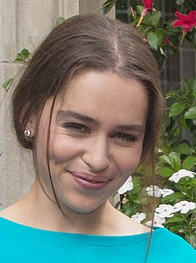
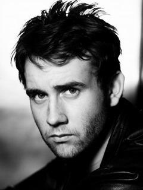
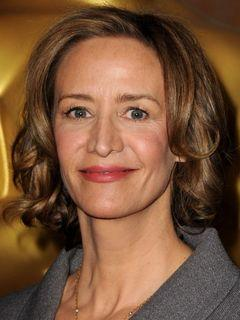

«До встречи с тобой» (англ. Me Before You) — британская мелодрама режиссёра Теа Шэррок по сюжету одноимённого романа Джоджо Мойес 2012 года. В фильме снимались: Эмилия Кларк, Сэм Клафлин, Дженна Коулман, Чарльз Дэнс, Мэттью Льюис, Бен Ллойд-Хьюз и Джанет Мактир. Фильм был выпущен на американском концерне «Warner Bros» 2 июня 2016 года.
|  |  |  | |
|---|---|---|---|
| Emilia Clarke | Sam Claflin | Mattew Lewis | Janet McTeer |